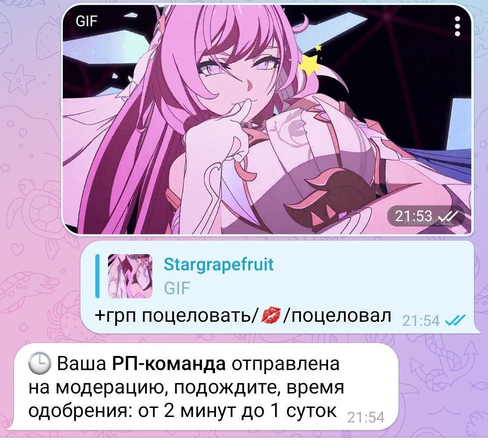

Vip-статус
🤴 VIP-статус — статус, позволяющий получить больше
функций и выделится на фоне остальных игроков.
・ Чтобы купить Vip напишите боту: ВИП
✧ Возможности VIP-статуса:
1. Украшение профиля
2. Новые команды
3. Увеличение лимитов
4. Создание рп-команд
1. Украшение профиля:
・ Особый значок в профиле.
・ +баннер <фото/видео/гиф> - баннер в профиль
— Пример установки тут: *тык*
2. Новые команды:
・ +сияния {число} {ответ на сообщение} - передать Сияния Мики.
3. Увеличение лимитов:
・ Ставки в казино до 1 миллиона.
— А в санте и прятках до 5 миллионов.
・ +2 места для детей в семью
・ Удвоение бонуса
・ +10 к фарму гостиков.
・ Лимит по символам для статуса и ника увеличены
ㅤ— с 20 до 30 символов
・ Трасса в гонках ремонтируется на 2 минуты быстрее
・ Отключение комиссии при передаче денег
4. Создание рп-команд:
❓ Всего у вас может быть до 10 рп-команд
・ +рп <название>/<эмодзи>/<действие> - создание рп.
ㅤ— Пример: +рп крепко обнять/🤗/крепко обнял
・ -рп <имя рп> - удаление рп.
・ Мои рп - просмотр всех ваших рп.
・ +грп <название>/<эмодзи>/<действие> - создание РП с медия-файлом.
ㅤПример:

— РП-команды можно делать с: гиф, видео, фото, голосовыми сообщениями